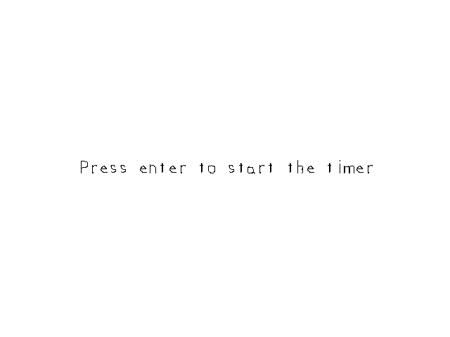

Timing

Last Updated: Jun 7th, 2025
We're going to create a very basic timer./* Headers */ //Using SDL, SDL_image, SDL_ttf, and STL string/stringstream #include <SDL3/SDL.h> #include <SDL3/SDL_main.h> #include <SDL3_image/SDL_image.h> #include <SDL3_ttf/SDL_ttf.h> #include <string> #include <sstream>
We're going to using the string stream library to do some text formatting.
//Timer start time
Uint64 startTime = 0;
//In memory text stream
std::stringstream timeText;
Before we enter the main loop we declare a time variable for our timer and a string stream to turn it into text. The time is an
Uint64 which is an unsigned 64 bit integer.
//Get event data
while( SDL_PollEvent( &e ) == true )
{
//If event is quit type
if( e.type == SDL_EVENT_QUIT )
{
//End the main loop
quit = true;
}
//Reset start time on return keypress
else if( e.type == SDL_EVENT_KEY_DOWN && e.key.key == SDLK_RETURN )
{
//Set the new start time
startTime = SDL_GetTicks();
}
}
Here in the event loop, we start the timer when the user presses the enter key. The way we start the timer is by getting the current application time with SDL_GetTicks.
To explain how this works, imagine you're in a room and you need to time something for 5 minutes but you don't have access to a smart phone. However, there is a clock on the wall and it's almost 8:10. What you can do is wait for the clock to hit 8:10 and then when it hits 8:15 that means 5 minutes have passed.
That's the same way you can do time with SDL. Say if you need to time something for 10 seconds. You can get the current time using
Once you start the timer at 30,000, you wait for
To explain how this works, imagine you're in a room and you need to time something for 5 minutes but you don't have access to a smart phone. However, there is a clock on the wall and it's almost 8:10. What you can do is wait for the clock to hit 8:10 and then when it hits 8:15 that means 5 minutes have passed.
That's the same way you can do time with SDL. Say if you need to time something for 10 seconds. You can get the current time using
SDL_GetTicks. Let's say it's been 30 seconds since the application started, and that means SDL_GetTicks is going to return
30,000. Why not 30? Because time in SDL_GetTicks is returned in milliseconds which is 1000th of a second. One second is 1000 milliseconds, 5 seconds is 5000 milliseconds, a minute is 60000 milliseconds, etc.Once you start the timer at 30,000, you wait for
SDL_GetTicks to return 40,000, and then you can say 10 seconds have passed.
//If the timer has started
if( startTime != 0 )
{
//Update text
timeText.str("");
timeText << "Milliseconds since start time " << SDL_GetTicks() - startTime;
SDL_Color textColor{ 0x00, 0x00, 0x00, 0xFF };
gTimeTextTexture.loadFromRenderedText( timeText.str().c_str(), textColor );
}
//Fill the background
SDL_SetRenderDrawColor( gRenderer, 0xFF, 0xFF, 0xFF, 0xFF );
SDL_RenderClear( gRenderer );
//Draw text
gTimeTextTexture.render( ( kScreenWidth - gTimeTextTexture.getWidth() ) / 2.f, ( kScreenHeight - gTimeTextTexture.getHeight() ) / 2.f );
//Update screen
SDL_RenderPresent( gRenderer );
First we check if the timer has a non zero value which mean the timer key was pressed (or you somehow pressed it in less than a millisecond after the application started). We call the
Then we call
str function with an empty string to reset the value of the string stream. Then
we use the string stream much like we would use cout from iostream to create a message with the current time.Then we call
loadFromRenderedText to create the texture from the string stream text and we then render the texture to the screen.